Project Overview
For my Advanced SolidWorks course at NU, I chose to model the JBL TuneFlex earbuds. Their organic geometry — especially the rounded lobe and smooth transitions — made them an ideal candidate for a surface‑modeling workflow. This project involved reference photography, caliper measurements, surface creation, curvature control, and final feature integration.
Initial Measurements & Photos
Before modeling, I captured isometric photos to use as sketch reference, and measured key dimensions using a caliper. I identified two main features:
- The lobe (the rounded ear‑facing geometry)
- The stem (the rest of the earbud geometry)
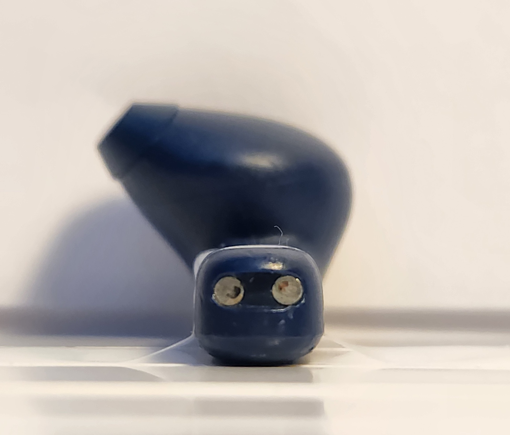
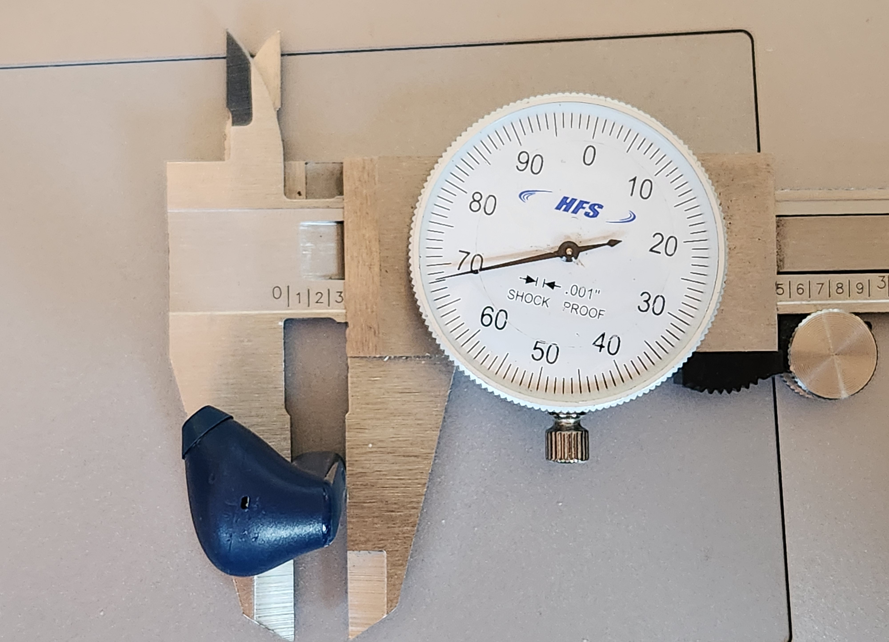
Base Feature — Stem Geometry
I began with a simple extruded stadium profile — a rectangle with rounded ends. This served as the foundation for the stem and provided reference geometry for the lobe.
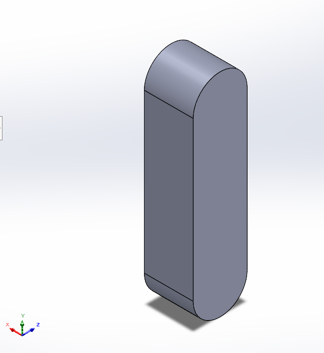
Reference Geometry for the Lobe
Using the stem as a base, I created planes and sketches to define the lobe’s cross‑sections. These sketches were aligned with the reference photos to ensure accurate curvature.
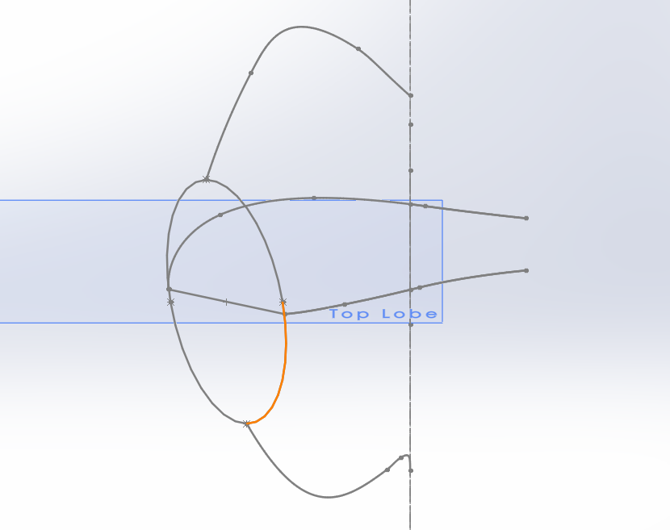
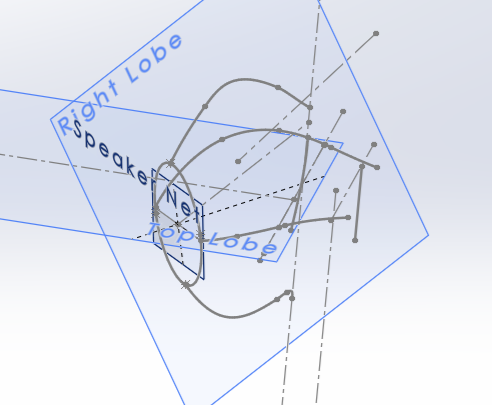
Surface Modeling the Lobe
The lobe’s geometry is highly organic, with almost no sharp edges. This made it ideal for surface modeling. I used boundary surfaces and curvature‑continuous transitions to sculpt the outer shell.
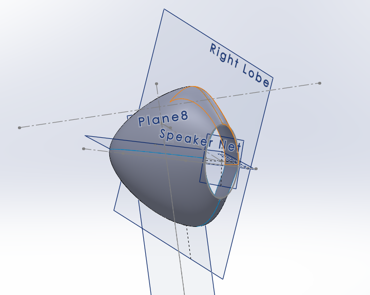
Joining Lobe and Stem
This was the most challenging part of the project. I used image‑based sketches, multiple reference planes, and curvature‑to‑face constraints to achieve a smooth, manufacturable transition between the two components.
At this point, I also converted the stem into a surface using Delete Face. This allowed me to ensure a smooth transition between the stem and lobe and to knit both bodies together seamlessly.
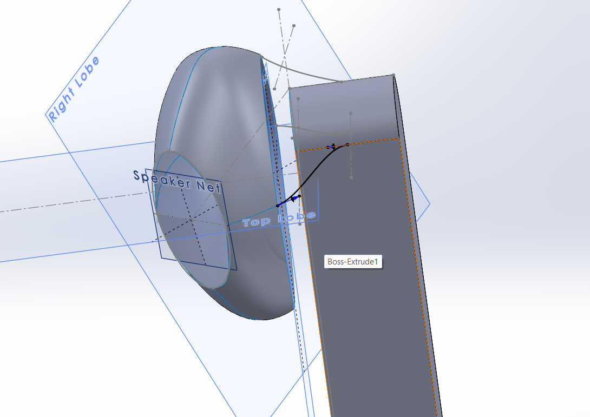
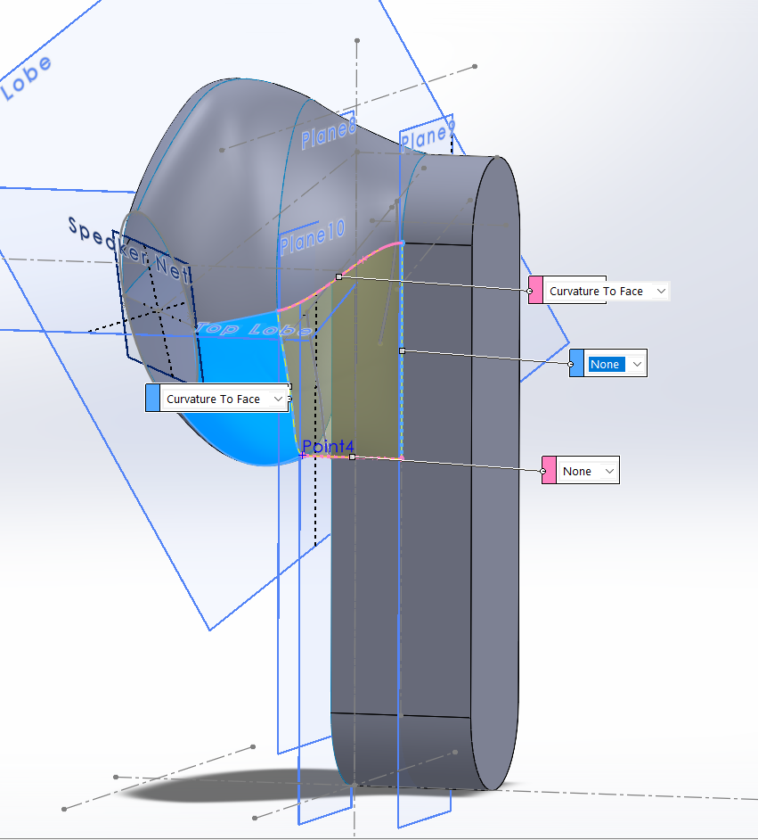
Filleting & Final Surface Knit
After knitting the surfaces, I added fillets to the stem and the junction between the lobe and stem. These fillets ensured a realistic and ergonomic final shape.
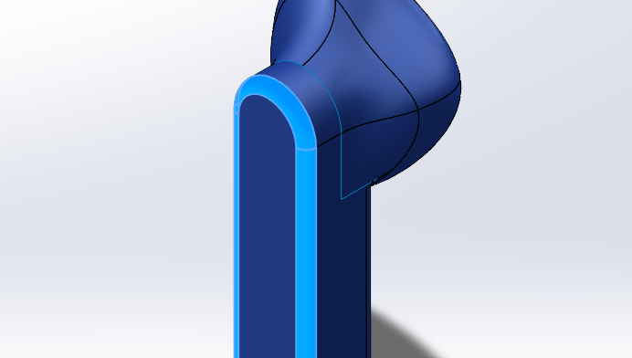
Final Result
The final model captures the smooth, organic geometry of the JBL TuneFlex earbuds. This project strengthened my understanding of surface modeling, curvature continuity, and multi‑plane reference workflows.

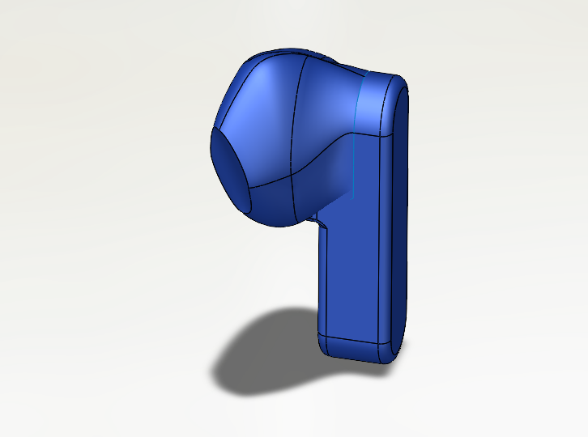
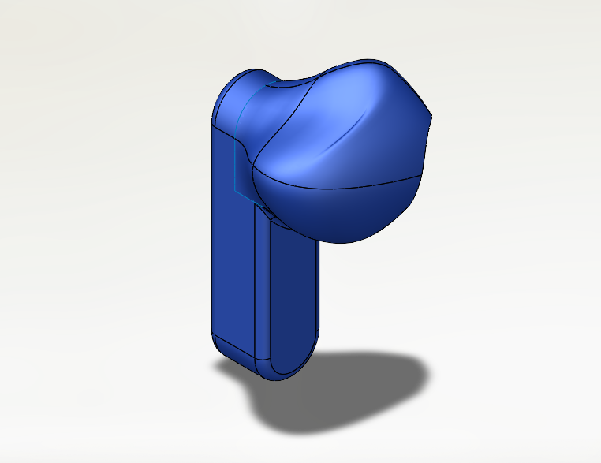